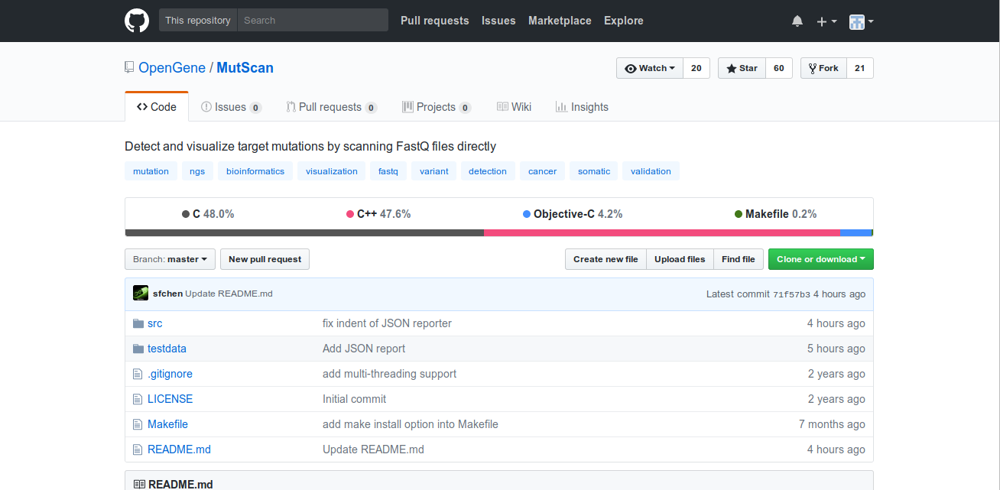

What is it for?
check whether the given FASTQ files contain some specific mutations.
visualize and validate them to avoid false positive calling if you have no
enough confidence with the mutations called by your pipeline.
check that in a fast way if you worry that your pipeline uses too strict
filtering and may cause some false negative.
visualize the called mutation with its clear pipeup information
in a more graphic way.
El tema es que esto ya se podía hacer antes con un procesado del FASTQ, era una cadena
de procesado de minimo 3 programas. Esto propicia que los datos se perturben un poco,
que no sea tan preciso, ya que con el filtrado se pueden perder informacion dando
falsos negativos. Podia dar falso positivo, hay que tener en cuenta que los programas
que se usaban no eran especificamente para hacer esta tarea, eran de un proposito
más general.
Una ventaja es que el resultado lo podemos ver de forma gráfica con un archivo html que
se genera automáticamente.
Why use it?
open source.
simple to use.
multi-threaded.
can be 50X+ faster than normal pipeline (BWA + Samtools + GATK /VarScan /Mutect ).
60 built-in cancer-related target mutations to search by default.
Es open source: es gratis, tienes a tu disposicion el código y puedes contribuir
a mejorarlo.
Simple de usar: el programa en sí no es muy complejo. Así, la interfaz de linea de
comandos queda muy limpia.
Multi-hilado: hoy en dia cualquier ordenador tiene mas de un nucleo en su procesador.
Así que está bien aprovecharlos todos con la proramción concurrente para acelerar el
proceso.
Los desarrolladores aseguran que puede ser 50 veces más rápido que el procesado
convencional, es al que me refería antes.
Lleva cargadas 60 mutaciones que suelen ser las más buscadas entre las relacionadas
con el cancer, para que podamos usar el programa sin decirle específicamente
qué mutaciones queremos encontrar.
Technologies.
Coded in C++.

Depends on zlib
Doesn't support Windows natively -> Cygwin-2.6.0/g++ 5.4.
Esta escrito en c++. Aunque en github pone que hay una parte en c, es porque
los headers tienen extensión .h en vez de .hpp y github los considera c.
Depende únicamente de la librería zlib, que usa para manejar los ficheros
FASTQ comprimidos. Este tipo de fichero puede pasar de 200 MB comprimido a
1.3 GB.
El programa funciona sobre plataformas POSIX, pero en windows podemos usarlo
con cygwin.
Usage.
mutscan -1 R1.fq.gz -2 R2.fq.gz # pair-end
mutscan -1 R1.fq.gz # single-end
then open mutscan.html with some browser and thats all!
We have more options, though
mutscan -1 R1.fq -2 R2.fq -m target.csv # or
mutscan -1 R1.fq -2 R2.fq -m target.vcf -r hg19.fa
Cuando secuenciamos con Illumina tenemos dos formas de leer los datos,
pair-end del que obtenemos los dos extremos de la misma secuencia,
y single-end del que obtenemos solo un extremo.
Con eso ya funciona, leeria en busca de las 60 mutaciones que tiene
ya cargadas por defecto y listo.
Podemos pasarle un archivo csv con las mutaciones que queremos buscar
especificamente (ahora enseño un ejemplo), o un vcf, en tal caso
habria que pasarle el archivo fasta de la secuencia completa, no nos sirve
el fastaq unicamente.
And more advanced options
usage: mutscan -1 <read1_file> -2 <read2_file> [options]...
options:
-1, --read1 read1 file name, required
-2, --read2 read2 file name
-m, --mutation mutation file name, can be a CSV format or a VCF format
-r, --ref reference fasta file name (only needed when mutation file is a VCF)
-h, --html filename of html report, default is mutscan.html in work directory
-t, --thread worker thread number, default is 4
-S, --support min read support required to report a mutation, default is 2.
-k, --mark when mutation file is a vcf file, --mark means only process the records with FILTER column is M
-l, --legacy use legacy mode, usually much slower but may be able to find a little more reads in certain case
-s, --standalone output standalone HTML report with single file. Don't use this option when scanning too many target mutations (i.e. >1000 mutations)
-n, --no-original-reads dont output original reads in HTML and text output. Will make HTML report files a bit smaller
-?, --help print this message
Why did I choose this software?
Cuando leí el titulo me sorprendió porque fue leerlo y entender
de qué se trataba.
Entré al repositorio, vi que era c++, me gustó, porque
prefiero los lenguajes de tipado fuerte y estático. Vi que estaba
bien escrito. Tiene 60 estrellas, que no está mal.
Lo clone, lo compile, lo probe vi que era facil y me quedé con él.
Code quality.
Modular and well-formated code .Improvable directory hierarchy .Documentation: user manual ,
but maybe there could be more comments in the code .
Handmade unit tests : not standarized with any framework.Tests and functional code are in the same class .There is no documentation related with the unit tests .
El codigo es modular y está bien formateado. Los nombres de la variables, las
clases y los métodos están bastante correctos. Aunque, eso sí,
están todos los archivos en la misma carpeta, se podría organizar un poco mejor.
En cuanto a la documentacion, el manual de usuario esta bien, está casi completo.
El codigo podría estar un poquito mejor comentado.
Los test están hechos a mano, que tiene merito, pero con un framework
podría estar mejor.
Además, los test están en las mismas clases mezclado con el codigo funcional.
Conclusions.
El software es util, facil de usar, mejor qu elo qu ehabia antes,
pero el codigo huele un pelin. Hasta ayer pensaba que el programa
no iba a crecer más y por eso se hizo así: poco documentado,
pruebas un poco chapuceras... pero vi que ayer habian añadido una nueva
característica, que es generar el informe en formato JSON.